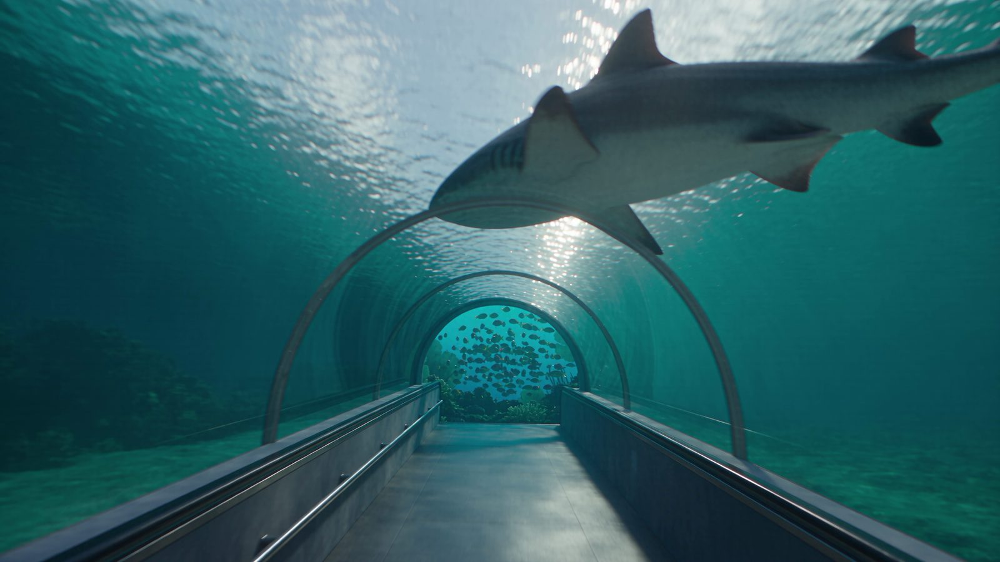

Рифовые акулы
Кормлениеежедневно, кроме пн · 16:00

Первый на Южном Урале и крупнейший в ПФО.
3000 обитателей на 2500 м² — от рифа до глубины.
01 · Океан в городе
Крупнейший океанариум Приволжского федерального округа: более 3000 морских и пресноводных обитателей из разных уголков планеты.
В аквариумах воссоздана естественная среда обитания, а экскурсоводы рассказывают о каждом виде — об образе жизни, питании и повадках.
02 · Экспозиция
2500м²
Более 2500 м² пространства с обитателями из разных стран и континентов: рыбы, рептилии, птицы, млекопитающие. Среди них — редкие и краснокнижные виды.
Купить билет→03 · Кормления
Понедельник — воскресенье
Четыре пингвина Гумбольдта — два самца и две самки — приехали из Приморского океанариума во Владивостоке. Вид занесён в Красную книгу. Во время кормления сотрудники рассказывают о рационе и повадках птиц.
Также по расписанию
Расписание может меняться — уточняйте в кассе или по телефону +7 (3532) 32-36-42.
04 · Экскурсии
Пингвины Гумбольдта, кубинские крокодилы, акулы, скаты, тропические рыбы. Экскурсовод рассказывает о каждом виде, вопросы можно задавать по ходу маршрута. Для семьи, компании или организованной группы.
Стоимость за группу
Входные билеты оплачиваются отдельно.
Групповые посещения
Дату и время согласуем заранее, в будни и выходные. На каждые 10 детей один сопровождающий взрослый проходит бесплатно. Экскурсию для группы можно заказать дополнительно.
05 · Наши обитатели
Морские и пресноводные жители из разных уголков планеты: рифовые акулы, пингвины Гумбольдта, кубинские крокодилы, скаты, арапаймы и редкие рыбы.
В кадреРифовая акула
Кто живёт в океанариуме→06 · В экспозиции
Больше трёх тысяч обитателей — вот с кем стоит познакомиться в первую очередь.
Кормлениеежедневно, кроме пн · 16:00
Кормлениеежедневно · 11:00 · 15:00 · 19:00
Кормлениевоскресенье · 14:00
Новые жители
Астронотусы Чили Ред и мексиканские амбистомы — аксолотли.
07 · Цены
Отметьте, кто идёт, — посчитаем стоимость и подскажем, как выгоднее.
от 12 лет
1000 ₽
до 11 лет включительно
800 ₽
по свидетельству о рождении
бесплатно
Бесплатнодети до 3 лет и посетители на инвалидной коляске
400 ₽дети с ограниченными возможностями здоровья
Льготные ценымногодетным, пенсионерам, инвалидам, участникам СВО — в кассе
−30%именинникам: в день рождения и ±3 дня
Бесплатно — дети до 3 лет (не включительно) по свидетельству о рождении; посетители, использующие инвалидную коляску.
Дети с ограниченными возможностями здоровья (ОВЗ) — 400 ₽.
Многодетным семьям, пенсионерам, инвалидам, участникам СВО и их семьям: детский 700 / 1000 ₽, взрослый 900 / 1200 ₽ (будни / выходные) — в кассе.
Именинникам −30% — в день рождения, за 3 дня до и 3 дня после, при предъявлении документа.
Семейный 2+2 (2 взрослых + 2 ребёнка до 11 лет) — 3000 / 4000 ₽, только в кассе.
Билет на будний день не действует в выходные и праздники. Срок действия билета — полгода со дня покупки. Льготы оформляются по подтверждающим документам. Скидки не суммируются. Дети младше 14 лет — только в сопровождении взрослого.
Да. Бесплатно — дети до 3 лет и посетители на инвалидной коляске. Дети с ОВЗ — 400 ₽. Многодетным семьям, пенсионерам, инвалидам, участникам СВО и их семьям — льготные цены в кассе. Именинникам — скидка 30%. Все условия
Да, любительская фото- и видеосъёмка разрешена без вспышки.
Да. После оплаты на сайте на вашу почту придут QR-коды по числу и типу билетов. Их сканируют на турникете — с экрана телефона или распечатанными.
Напишите в сообщения официальной группы ВКонтакте, на info@oceanorenburg.ru или позвоните +7 (3532) 32-36-42.
Свяжитесь с нами любым способом — ВКонтакте, почта или телефон — и пришлите банковский чек по операции и правильный адрес почты.
Через форму возврата: введите код из электронного билета и почту или телефон, указанные при покупке, выберите неиспользованные билеты и причину. Можно вернуть весь заказ или отдельные билеты. Деньги вернутся на карту, с которой была оплата.
Позвоните по номеру +7 (987) 199-16-00 — подберём удобное время для индивидуальной или групповой экскурсии.
Дети младше 14 лет допускаются только в сопровождении совершеннолетнего. Правила посещения
Полгода со дня покупки. Билет на будний день в выходные и праздники не действует.
09 · Как добраться
Мегамолл «Мармелад», вход №5